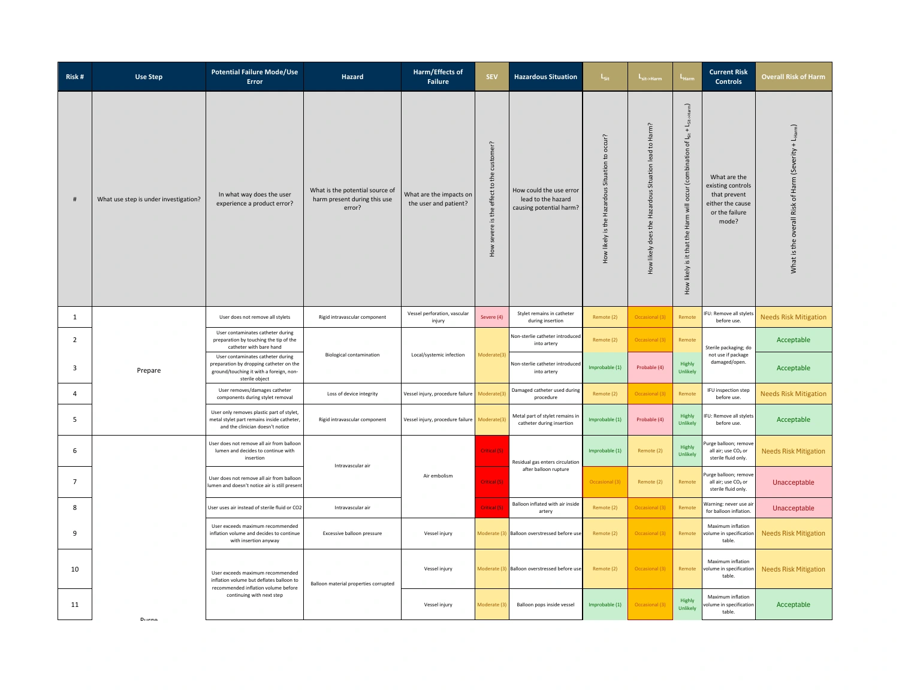

Start with the physical part.
For this medical-device development project, I modeled two existing valve components from a Fogarty catheter in CAD. The task was to understand and represent an existing device; these are reverse-engineered components, not a newly fabricated prototype.

Follow the device through its use.
I created the use FMEA and contributed to the process and design FMEAs. The use analysis followed six tasks from the instructions for use: prepare, purge, inspect, place, inflate, and withdraw. For each scenario, it connected a use error to a hazardous situation, potential harm, likelihood, severity, and existing controls.
The analysis covered hazards such as air embolism, vessel injury, component separation, and excessive withdrawal force. Linking each hazard to a use step made the risk assessment specific to how the device is handled.
CAD and risk documentation.
This semester project connected physical geometry with use-related risk and design-control documentation. My direct contributions were the two valve models and use FMEA, with collaborative work on the other risk analyses.
Source: my CAD renders, use FMEA, and BMED 4823 project documentation.
Trace the error all the way to the harm.
These examples are condensed from my course use FMEA. “Existing control” means a control documented in that analysis; it does not mean I designed or verified a new mitigation.
| Use error | Hazardous situation and potential harm | Existing control recorded in the worksheet |
|---|---|---|
| Purge: residual air goes unnoticed | Air can enter circulation after balloon rupture; potential air embolism. | Instructions to purge and remove air, with specified inflation media. |
| Place: advance against resistance | The catheter is forced through the vessel; potential dissection or perforation. | Instruction not to advance against resistance. |
| Withdraw: continue pulling against adherent material | High extraction force; potential balloon rupture, catheter separation, or vessel injury. | Contraindication for fibrotic, adherent, or calcified material. |
All three examples were rated unacceptable in the worksheet despite the listed controls. A warning being present did not automatically make the scenario acceptable in the assessment.
Condensed from uFMEA Fogarty, risk rows 7, 35, and 66. Course analysis; not clinical instructions or a validated regulatory risk assessment.
Likelihood has more than one step.
The worksheet separated the likelihood of a hazardous situation from the likelihood that the situation causes harm. That distinction helps explain why the same use error can lead to several scenarios, and why a count of numbered risk rows is not the same as a count of unique failure modes.
Severity describes the harm, while the likelihood terms describe how the scenario can progress. The resulting rating identifies which scenarios need further mitigation work.
What would need verification next.
My deliverables were reverse-engineered CAD and risk documentation. A next phase would need to turn proposed mitigations into specific verification activities: checking that geometry matches the physical components, defining functional requirements, and evaluating use-related controls under representative conditions.
Dimensional inspection results, manufacturing tolerances, and mitigation-verification results are not reported for this project. The renders alone do not establish those properties.
The actual use-risk worksheet.
The original worksheet preserves the distinction between a failure mode, its hazardous situation, and the possible harm. It also shows the existing controls and the course risk ratings used in the examples above.

